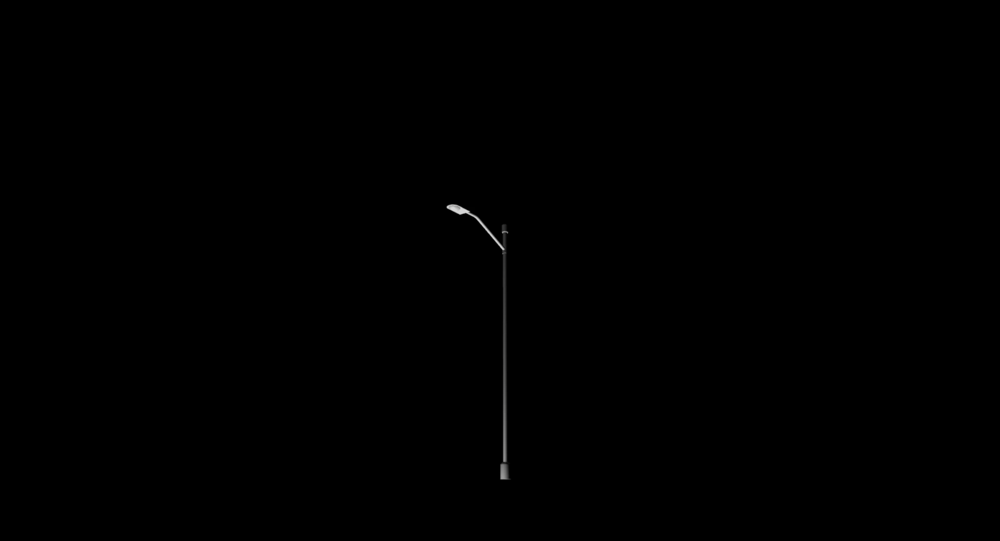

SOUND
SuperCollider
後にTouchDesignerと連携し映像と一体化させるため、制作の前段階としての音源素材。
川や鳥の環境音から始まり、徐々に電子音交じりの音が鳴り始め、再び環境音へ戻る構成。研究の体験から着想。
得体の知れない存在が現れ徐々に通り過ぎていくようなイメージをもとに作曲。
動画はライブコーディングによる演奏。
NEXT

SuperCollider
後にTouchDesignerと連携し映像と一体化させるため、制作の前段階としての音源素材。
川や鳥の環境音から始まり、徐々に電子音交じりの音が鳴り始め、再び環境音へ戻る構成。研究の体験から着想。
得体の知れない存在が現れ徐々に通り過ぎていくようなイメージをもとに作曲。
動画はライブコーディングによる演奏。